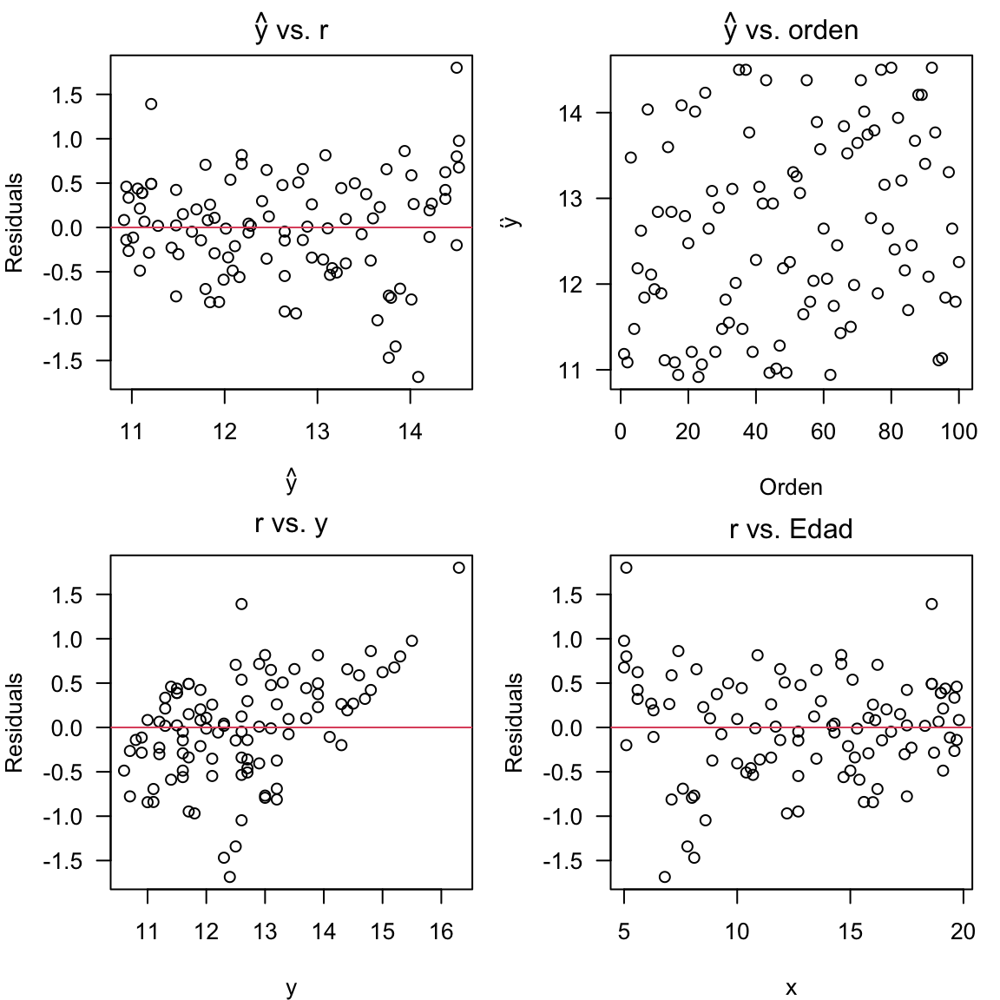

Capítulo 2 Regresión Lineal Simple
Diariamente, en muchos procesos productivos se controlan las condiciones de operación de un sistema y es de interés determinar cómo una variable respuesta de cambia dependiendo dichas condiciones. Por ejemplo, en un proceso de embutido de cárnicos la cantidad de producto empacado (en gramos, por ejemplo) dependa de la velocidad y la temperatura a la que opere una máquina.
En la práctica, por supuesto, es fundamental
- Entender la relación entre la cantidad de producto empacado, la velocidad y la temperatura de operación;
- Garantizar que la cantidad de producto empacado cumpla con las especificaciones;
- Determinar las condiciones óptimas de operación que minimizan los costos asociados y disminuyen considerablemente los desperdicios de producto.
El Modelo de Regresión Lineal es ampliamente utilizado en la práctica ingenieril cuando, en un proceso productivo como el anterior, se quiere dar respuesta los numerales 1, 2 y 3. En un sentido menos amplio, los modelos de regresión lineal se utilizan para estudiar la relación entre una variable numérica, que denominamos variable respuesta \(Y\), y un conjunto de variables controlables de dicho proceso denotadas como \(X_1, X_2,\ldots, X_k\). Una vez entendemos dicha relación, es posible predecir futuros valores de la variable respuesta para valores específicos y conocidos de las variabes controlables.
Dependiendo del número de variables controlables, los modelos de Regresión Lineal pueden dividirse en Modelo de Regresión Lineal Simple (RLS) y Modelo de Regresión Lineal Múltiple (RLM).
- Cuando se tiene sólo una variable controlable, digamos \(x\), hablamos de RLS.
- Cuando se tienen más de una variable controlable, digamos \(x_1, x_2, \ldots, x_k\), hablamos de RLM. En el caso de proceso de embutidos, \(x_1 = \text{velocidad}\) y \(x_2 = \text{temperatura}\).
2.1 Formulación básica del modelo de RLS
El modelo de RLS surge ante la necesidad de predecir una variable respuesta \(Y\), generalmente continua, como función de una variable controlable \(X\).
Matemáticamente el modelo puede expresarse como:
\[\begin{align} \label{mod1} Y_i &= \beta_0 + \beta_1X_i + \epsilon_i,\\ \epsilon_i &\sim N(0, \sigma^2), \\ \sigma^2 &= \text{constante}. \end{align}\]
donde \((\beta_0, \beta_1, \sigma^2)\) corresponden a los parámetros del modelo y \(\epsilon_i\) es el error aleatorio para la observación \(i\). Los términos \((\beta_0, \beta_1)\) corresponden a los coeficientes del modelo, mientras \(\sigma^2\) es la varianza. En la práctica, se tiene o toma una muestra aleatoria de tamaño \(n\) de una población o proceso de producción/servicios, y se quieren estimar, a partir de dicha muestra, los valores de \((\beta_0, \beta_1, \sigma^2\)).
Consideremos un proceso donde se tienen registros de la Resistencia, en psi, y la Edad, en semanas, de varias soldaduras. Los datos pueden leerse en R como se muestra a continuación:
## lectura de datos en URL
file <- "https://www.dropbox.com/s/h4abseyfnvfwgxq/data_rls.txt?dl=1"
datos <- read.table(file = file, header = TRUE)
## primeras 6 filas de los datos
head(datos) ## Resistencia Edad
## 1 10.9 18.7
## 2 10.6 19.1
## 3 13.4 9.3
## 4 10.7 17.5
## 5 13.0 14.6
## 6 13.1 12.8Con miras explorar si existe una relación entre la Resistenciay la Edad de la soldadura, existen dos estrategias.
En RLS, es posible establecer si existe una posible relación entre \(X\) y \(Y\) es
- Construir un gráfico de dispersión.
- Calculando el coeficiente de correlación lineal muestral;
Para construir un gráfico de dispersión procedemos de la siguiente manera:
## gráfico de dispersión
require(ggplot2)
ggplot(datos, aes(x = Edad, y = Resistencia)) + geom_point() +
theme_minimal()
Observe que, aparentemente, cuanto mayor sea la Edad de la soldadura menor será su Resistencia. Por lo tanto, podemos decir que la relación entre Edad y Resistencia es inversamente proporcional.
El coeficiente de correlación \(\rho\) entre dos variables aleatorias \(X\) e \(Y\) determina la relación lineal que existe entre ellas. A partir de una muestra de tamaño \(n\), dicho coeficiente puede calcularse como
\[\begin{eqnarray} \hat{\rho}_{XY} &=& \frac{\text{Cov}(X,Y)}{\sigma_X \sigma_Y} \\\nonumber &=& \frac{\sum_{i=1}^n{(x_i-\bar{x})(y_i-\bar{y})}}{\sqrt{\sum_{i=1}^n{(x_i-\bar{x})^2}\sum_{i=1}^n{(y_i-\bar{y})^2}}} \end{eqnarray}\]
donde
\[\begin{eqnarray} \bar{x} &=& \frac{\sum_{i=1}^n{x_i}}{n} \\\nonumber \bar{y} &=& \frac{\sum_{i=1}^n{y_i}}{n}. \end{eqnarray}\]
El coeficiente de correlación muestral \(-1\leq \hat{\rho}_{XY} \leq 1\) determina la relación lineal entre las variables \(X\) y \(Y\).
- \(\hat{\rho}_{XY} \approx -1\) indica \(X\) y \(Y\) tienen una relación lineal inversa, es decir, que cuando \(X\) aumenta, la variable \(Y\) disminuye.
- \(\hat{\rho}_{XY} \approx 0\) indica que no existe una relación lineal entre \(X\) y \(Y\). Sin embargo, este resultado no es suficiente para descartar que exista otro tipo de relación (por ejemplo cuadrática o cúbica) entre las dos variables.
- \(\hat{\rho}_{XY} \approx 1\) indica \(X\) y \(Y\) tienen una relación lineal positiva, es decir, que cuando \(X\) aumenta, la variable \(Y\) también.
Con los datos de soldaduras se tendría que:
## coeficiente de correlación
with(datos, cor(Edad, Resistencia))## [1] -0.8827718Por lo tanto, concluimos que la relación entre la Edad de la soldadura y su Resistencia es inversamente proporcional.
2.2 Estimación
Para estimar el modelo de RLS, se requiere una muestra aleatoria de tamaño \(n\) de una población. Esta muestra puede corresponder a observaciones específicas de un proceso de producción o servicios donde se controla una variable \(X\) y se registra una variable respuesta \(Y\). Por lo general, los datos para \(n\) unidades experimentales de dicho proceso están constituidos por los pares \[(x_1,y_1),(x_2,y_2),(x_3, y_3),\ldots,(x_n,y_n).\]
En nuestro ejemplo, los datos están organizados de la siguiente forma:
## muestra los primeros 10 pares de datos
head(datos, 10)## Resistencia Edad
## 1 10.9 18.7
## 2 10.6 19.1
## 3 13.4 9.3
## 4 10.7 17.5
## 5 13.0 14.6
## 6 13.1 12.8
## 7 12.1 16.0
## 8 14.3 7.0
## 9 11.9 14.9
## 10 11.1 15.6Así, los pares \((x_1,y_1)\) y \((x_5, y_5)\) corresponden a \((18.7, 10.9)\) y \((14.6, 13.0)\), respectivamente.
Para determinar el tamaño de la muestra, hacemos
## número total de observaciones
NROW(datos) ## [1] 100Usualmente, los parámetros \((\beta_0, \beta_1,\sigma^2)\) el modelo de RLS puede estimarse utilizando el método de mínimos cuadrados. La idea fundamental es minizar la expresión
\[\begin{eqnarray*} L &=&\sum_{i=1}^n\epsilon_i^2 = \sum_{i=1}^n(Y_i-\beta_0-\beta_1X_i)^2. \end{eqnarray*}\]
Para encontrar los estimadores de \(\beta_0\) y \(\beta_1\) derivamos parcialmente e igualamos a cero las expresiones resultantes, esto es
\[\frac{\partial L}{\partial \beta_0}=0, \hspace{1cm} \frac{\partial L}{\partial \beta_1}=0.\]
Los estimadores \(\beta_0\) y \(\beta_1\) están dados por
\[\begin{align} \widehat{\beta}_0&=\overline{Y}-\widehat{\beta}_1\overline{X}, \\ \widehat{\beta}_1&=\frac{S_{xy}}{S_{xx}} \end{align}\]
donde
\[ S_{xx} = \sum_{i=1}^n(x_i-\bar{x})^2 \quad\text{y}\quad S_{xy} = \sum_{i=1}^n(x_i-\bar{x})(y_i-\bar{y}). \]
Por otro lado,
\[\begin{align} \hat{\sigma}^2 &= \frac{L}{n-2} \\ &=\frac{1}{n-2}\sum_{i=1}^n\hat{\epsilon}_i^2 \\ &=\frac{1}{n-2}\sum_{i=1}^n(y_i-\hat{y}_i)^2 \\ &=\frac{1}{n-2}\sum_{i=1}^n(y_i-\hat{\beta}_0-\hat{\beta}_1X_i)^2 \\ &=\frac{SSE}{n-2} \\ &= MSE \end{align}\]
donde el \(SSE\) corresponde a la suma de cuadrados del error, y \(MSE\) es el Mean Squared Error.
Finalmente, el modelo de RLS estimado es
\[\begin{align} \widehat{Y}_i &= \hat{\beta}_0 + \hat{\beta}_1X_i,\\ \epsilon_i &\sim N(0, \hat{\sigma}^2), \\ \hat{\sigma}^2 &= \text{constante}. \end{align}\]
Otra forma de escribirlo es
\[\begin{align} \widehat{Y}_i &\sim N(\hat{\mu}_i, \hat{\sigma}^2), \\ \hat{\mu}_i &= \hat{\beta}_0 + \hat{\beta}_1X_i. \end{align}\]
A partir del modelo ajustado es posible predicir el valor esperado de \(Y\) para valores conocidos de \(X\), es decir, calcular \(\widehat{E[Y|X=x_0]}\), donde \(x_0\) es un valor conocido del factor controlable \(X\). Adicionalmente, podemos calcular intervalos de confianza e intervalos de predicción para \({E[Y|X=x_0]}\).
Observe que para un valor específico de \(X\), digamos \(x_i\), se tiene el valor correspondiente de \(Y\) es \(y_i\). En otras palabras, la \(i\)-ésima unidad experimental se produjo cuando \(X = x_i\) y que, bajo estas condiciones, se obtuvo que \(Y = y_i\).
En R la función clave paara ajustar modelos de RLS es lm. Para mayor información, puede consultar la ayuda de la función escribiendo ?lm en la consola, o en la página oficial.
En general, la sintaxis es
modelo <- lm(y ~ x, data = datos)donde y es la variable respuesta, x es el factor controlable o variable independiente y datos es el objeto en R que contiene los datos con los que estamos trabajando.
Para los datos de las soldaduras se tiene que:
## ajuste del modelo de RLS
(modelo <- lm(Resistencia ~ Edad, data = datos))##
## Call:
## lm(formula = Resistencia ~ Edad, data = datos)
##
## Coefficients:
## (Intercept) Edad
## 15.7427 -0.2438Los resultados indican que \(\widehat{\beta}_0 = 15.74\) y \(\widehat{\beta}_1 = -0.244\). Por lo tanto, el modelo ajustado puede escribirse como:
\[\begin{align} \widehat{\text{Resistencia}}_i &= 15.74 -0.244\,\text{Edad}_i ,\\ \epsilon_i &\sim N(0, \sigma^2), \\ \sigma^2 &= \text{constante}. \end{align}\]
Cómo interpretamos \(\widehat{\beta}_0\) y \(\widehat{\beta}_1\)?
- Se espera que, por cada semana que transcurre, la resistencia de la soldadura disminuya \(0.244\) psi.
- Una soldadura nueva \((\text{Edad} = 0)\) tiene una resistencia promedio de \(15.74\) psi
Observe que aún no tenemos el valor estimado de \(\sigma\). Este parámetro del modelo de RLS puede obtenerse como el \(MSE\) de la tabla de análisis de varianza o Tabla ANOVA, que describiremos a continuación.
2.3 Tabla ANOVA y medidas de desempeño
La Tabla ANOVA es útil para
- estimar la varianza del modelo de RLS, \(\sigma^2\);
- calcular el coeficiente de determinación \(R^2\);
- verificar la bondad de ajuste del modelo.
En el modelo de RLS, la varianza total de la respuesta puede descomponerse como
\[SST = SSR + SSE\] donde
\[\begin{align} SSR &= \text{ varianza atribuible al factor controlable } x\\ SSE &= \text{ varianza atribuible a factores no controlables} \end{align}\]
A partir de la muestra,
\[\begin{align} SST &= \sum_{i=1}^n(y_i-\bar{y})^2, \\ SSR &= \sum_{i=1}^n(\hat{y}_i-\bar{y})^2=\widehat{\beta}_1S_{xy}, \\ SSE &= L = \sum_{i=1}^n\widehat{\epsilon}_i^2 = \sum_{i=1}^n(y_i-\hat{y}_i)^2 \\ \widehat{y}_i &= \widehat{\beta}_0-\widehat{\beta}_1X_i \end{align}\]
Estimación de \(\sigma^2\)
A partir de los resultados una vez es estima el modelo,
\[\widehat{\sigma}^2 = \frac{L}{n-2} = \frac{SSE}{n-2} = MSE\]
El término \(MSE\) se obtiene de la Tabla ANOVA. Al igual a como ocurre con el \(SSE\), el \(MSE\rightarrow 0\) para un modelo de RLS ideal. Aunque esto es deseable, es difícilmente observable en la práctica debido a las innumerables fuentes de variabilidad de los procesos de producción y de servicios.
En R, el valor de Residual Standard Error, \(RSE\), calculado como \(RSE = \sqrt{MSE} = \hat{\sigma}\) puede obtenerse como:
## estimación de sigma
summary(modelo)$sigma## [1] 0.5908683A partir de etse resultado se concluye que \(\hat{\sigma} = 0.591\). Por lo tanto, \(MSE = 0.591^2 = 0.349\). Finalmente, el modelo ajustado puede expresarse como
\[\begin{align} \widehat{\text{Resistencia}}_i &\sim N(\hat{\mu}_i, \hat{\sigma}^2),\\ \hat{\mu}_i &\sim 15.743 - 0.244\,\text{Edad}, \\ \hat{\sigma}^2 &= 0.591^2 = 0.349. \end{align}\]
Inferencia para \(\sigma^2\)
A partir \(\widehat{\sigma}^2\) es posible probar si
\[\begin{align} H_0: \sigma^2 = \sigma^2_0 \\ H_1: \sigma^2 \neq \sigma^2_0 \end{align}\]
donde \(\sigma^2_0 > 0\) es un valor específico para \(\sigma^2\).
El resultado básico es
\[\frac{(n-2)\,\widehat{\sigma}^2}{\sigma^2}\sim \chi^2_{n-2} \] Así, un intervalo de confianza del \((1-\alpha)100\%\) para \(\sigma^2\) está dado por:
\[\sigma^2 \in (a, b)\] donde
\[a = \frac{(n-2)\,\widehat{\sigma}^2}{\chi^2_{1-\alpha/2,n-2}}, \quad \quad b = \frac{(n-2)\widehat{\sigma}^2}{\chi^2_{\alpha/2,n-2}} \]
Finalmente, diremos que \(\sigma^2 \neq \sigma^2_0\) si el valor \(\sigma^2_0\) no se encuentra en el intervalo \((a,b)\).
En R todo este procedimiento puede hacerse de la siguiente manera:
## intervalo de confianza para sigma^2
alpha <- 0.05
resultados <- summary(modelo)
sigma <- resultados$sigma
df <- resultados$df[2]
upper_limit <- df*sigma^2/qchisq(alpha/2, df)
lower_limit <- df*sigma^2/qchisq(1-alpha/2, df)
c(lower_limit = lower_limit, sigma2_hat =sigma^2, upper_limit = upper_limit)## lower_limit sigma2_hat upper_limit
## 0.2688068 0.3491253 0.4719150Finalmente, con una confianza del 95%, \(\sigma^2 \in(0.269, 0.472)\). Ahora, como el valor \(0\) no se encuentra en el intervalo de confianza, podemos afirmar que \(\sigma^2 > 0\) a nivel poblacional.
Para obtener un intervalo de confianza del 95% para \(\sigma\), basta calcular la raíz cuadrada de estos límites. Por lo tanto, \(\sigma \in(0.519, 0.687)\).
Coeficiente de determinación \(R^2\)
En el modelo de RLS, una de las medidas más utilizadas para evaluar su desempeño o ajuste es el coeficiente de determinación \(R^2\). Matemáticamente, el \(R^2\) puede calcularse como
\[R^2 = \widehat{\rho}_{XY}^2,\]
donde \(\widehat{\rho}_{XY}\) es el coeficiente de correlación muestral entre \(X\) e \(Y\), es un indicador de la calidad del modelo. En nuestro caso, una forma de hacerlo en R es
## coeficiente de determinación
rho_est <- with(datos, cor(Resistencia, Edad))
rho_est^2## [1] 0.7792861Utilizando el objeto en R que contiene el modelo ajustado, podemos hacer
## obtención del R^2 a partir de un objeto lm
summary(modelo)$r.squared ## [1] 0.7792861para obtener el coeficiente de determinación. Por lo tanto, podemos concluir, con base en nuestro modelo estimado de RLS, que la Edad de la soldadura explica alrededor del 78% de la varabilidad total de la Resistencia.
A partir de esta definición y los valores de \(SST\), \(SSR\) y \(SSE\) es fácil llegar a que
\[R^2 = 1-\frac{SSE}{SST}\] Técnicamente, \(0\leq R^2 \leq 1\), donde \(R^2 \rightarrow 0\) y \(R^2 \rightarrow 1\) representan modelos de RLS con desempeños deficientes e ideales, respectivamente. Sin embargo, en el Capítulo 3 estudiaremos otras medidas que nos permiten determinar si nuestro modelo es lo suficientemente bueno. Al final, el objetivo es seleccionar el mejor modelo de regresión que nos permite explicar, correctamente, una variable respuesta de interés en función de una o más variables explicativas o controlables.
Validación del modelo de RLS
Al utilizar RLS queremos estar seguros de que el modelo ajustado es considerablemente mejor que no tener dicho modelo. Esto equivale a determinar si la contribución del factor controlable \(X\) para predecir \(E[Y|X=x_0]\) es sustancial. Formalmente, esto equivale a realizar una prueba de significancia global.
La prueba de significancia global puede realizarse de dos maneras en RLS:
- Utilizando los resultados de la Tabla ANOVA;
- A través de un procedimiento de pruebas de hipótesis basado en la distribución \(t\) de Student.
En términos generales, la prueba de significancia global equivale a probar
\[ \begin{split} &H_0: \beta_1 = 0 \\ &H_A: \beta_1 \neq0 \end{split} \]
Cuando utilizamos la Tabla ANOVA, el estadístico de prueba es
\[F_\text{calculado} = \frac{MSR}{MSE} \sim F_{1, n-2}\] donde \(F_{1, n-2}\) corresponde a la distribución \(F\) con \(1\) grado de libertad en el numerador y \(n-2\) grados de libertad en el denominador.
El estadístico \(F_\text{calculado}\) contrasta qué tanto de la varianza de \(Y\) puede explicarse con el factor controlable \(X\) versus los factores incontrolables del proceso.
- \(F_\text{calculado} <<< 1\) indica que los factores incontrolables explican más que el factor controlable \(X\). Si este fuera el caso, deberíamos explorar otro factor \(X\) para explicar \(Y\).
- Cuando \(F_\text{calculado} \approx 1\), la varianza de \(Y\) explicada por el factor controlable y los factores incontrolables es similar. En esta situación, lo mejor es explorar otro factor \(X\) para explicar \(Y\).
- Cuando \(F_\text{calculado} >>> 1\) concluimos que la variabilidad de la respuesta puede ser explicada mayormente por el factor controlable que por aquellos **factores incontrolables*. Este es el caso ideal.
Para un nivel de significancia \(\alpha \in (0,1)\), rechazamos \(H_0\) si
\(F_\text{calculado} > F_{1-\alpha,1,n-1}\), donde \(F_{\alpha/2,1,n-2}\) es el percentil \(1-\alpha\) de una distribución \(F\) con 1 y \(n-2\) grados de libertad. En
R, estos percentiles pueden calcularse utilizando la funciónqf. Por ejemplo, \(F_{0.95,1,98}\) es 3.94 y se obtiene comoqf(0.95, 1, 98).El valor \(p\), calculado como \(p=P(F_{1,n-1}>F_\text{calculado})\), es menor que \(\alpha\). Por ejemplo, si \(F_\text{calculado} = 7.34\), el valor \(p\) para \(n=49\) será 0.009. Este valor se obtiene con la función
pf()haciendopf(7.34, 1, 49, lower.tail = FALSE)
La prueba de significancia global se realiza de manera automática cuando empleamos usamos summary(modelo). La parte relevante de los resultados corresponde a la última línea de la salida del R, es decir, a
F-statistic: 346 on 1 and 98 DF, p-value: < 2.2e-16En este caso, F-statistic corresponde al estadístico de prueba \(F_\text{calculado}\), y los valores 1 y 98 a los grados de libertad del \(MSR\) y \(MSE\), respectivamente. Finalmente, el valor \(p\) es \(p=2.2\times10^{16}\), por lo que rechazamos \(H_0\) y concluimos que incluir el modelo de RLS que incluye la Edad para explicar la Resistencia de una soldadura es mejor que no tener un modelo de sólo intercepto, es decir, un modelo que no incluye ningún factor controlable que probablemente modifique los valores de dicha Resistencia.
Cuando utilizamos la distribución \(t\) de Student, podemos probar
\[ \begin{split} &H_0: \beta_1 = 0 \\ &H_A: \beta_1 \neq0 \end{split} \]
A partir de las propiedades de los coeficientes estimados \((\widehat{\beta}_0,\widehat{\beta}_1)\) y bajo condiciones de regularidad, es fácil llegar a que
\[\begin{align} \widehat{\beta}_0 \sim N(\beta_0, \widehat{\sigma}_{\widehat{\beta}_0}^2) \\ \widehat{\beta}_1 \sim N(\beta_1, \widehat{\sigma}_{\widehat{\beta}_1}^2) \end{align}\]
donde
\[\begin{align} \widehat{\sigma}_{\widehat{\beta}_0}^2 &= \sqrt{\hat{\sigma}^2\left(\frac{1}{n}+\frac{\bar{x}}{SS_x}\right)} \\ \widehat{\sigma}_{\widehat{\beta}_1}^2 &=\sqrt{\frac{\hat{\sigma}^2}{SS_x}} \end{align}\]
Así, el estadístico de prueba será
\[t_{\text{calculado}} = \frac{\hat{\beta}_1}{\widehat{\sigma}_{\widehat{\beta}_1}}\sim t_{n-2}\]
donde \(t_{n-2}\) corresponde a la distribución \(t\) con \(n-2\) grados de libertad. Bajo \(H_0\), \(t_{\text{calculado}} \sim t_{n-2}\). Para un nivel de significancia \(\alpha \in (0,1)\), rechazamos \(H_0\) si
\(|t_\text{calculado}| > t_{1-\alpha/2, n-2}\), donde \(t_{1-\alpha/2, n-2}\) es el percentil \(1-\alpha/2\) de una distribución \(t\) con \(n-2\) grados de libertad. En
R, estos percentiles pueden calcularse utilizando la funciónqt. Por ejemplo, \(t_{0.95,98}\) es 1.66 y se obtiene comoqt(0.95, 98).El valor \(p\), calculado como \(p=2\,P(t_{n-2} > |t_\text{calculado}|\), es menor que \(\alpha\). Por ejemplo, si \(t_\text{calculado} = 2.54\) cuando \(n=60\), el valor \(p\) será 0.014. Para calcularlo, usamos
2*pt(abs(2.54), 58, lower.tail = FALSE)enR.
R, utilizaríamos la pnorm() en lugar de pt(). Para más detalles, escriba ?pnorm en la consola del R.
Inferencia para \(\beta_0\) y \(\beta_1\)
A partir de las distribuciones muestrales de \(\widehat{\beta}_0\) y \(\widehat{\beta}_1\) es posible realizar inferencia sobre \(\beta_0\) y \(\beta_1\). Este trabajo inferencial puede hacerse a través de:
- Pruebas de hipótesis
- Intervalos de confianza
Cuando utilizamos pruebas de hipótesis, se prueban
\(H_0:\beta_0 = 0\) vs. \(H_1:\beta_0 \neq 0\) usando el estadístico de prueba \[t_{\text{calc}} = \frac{\hat{\beta}_0-0}{\widehat{\sigma}_{\widehat{\beta}_0}}\]
\(H_0:\beta_1 = 0\) vs. \(H_1:\beta_1 \neq 0\) usando el estadístico \[t_{\text{calc}} = \frac{\hat{\beta}_1-0}{\widehat{\sigma}_{\widehat{\beta}_1}}\]
y, en cualquiera de los dos casos, rechazamos \(H_0\) si \(|t_{\text{calculado}}| > t_{1-\alpha/2,n-2}\).
Los intervalos de confianza del \((1-\alpha)100\%\) para los coeficientes de represión serán
\[\begin{align} {\beta}_0 \in (\hat{\beta}_0 - t_{\alpha/2,n-2}\,\widehat{\sigma}_{\widehat{\beta}_0},\quad \hat{\beta}_0 + t_{\alpha/2,n-2}\,\widehat{\sigma}_{\widehat{\beta}_0})\\ {\beta}_1 \in (\hat{\beta}_1 - t_{\alpha/2,n-2}\,\widehat{\sigma}_{\widehat{\beta}_1},\quad \hat{\beta}_1 + t_{\alpha/2,n-2}\,\widehat{\sigma}_{\widehat{\beta}_1}) \end{align}\]
En nuestro ejemplo, podemos obtener los estadísticos de prueba para \(\beta_0\) y \(\beta_1\) utilizando el objeto modelo que contiene los resultados del modelo de RLS:
## estadísticos de prueba para beta_0 y beta_1
coefficients(summary(modelo))## Estimate Std. Error t value Pr(>|t|)
## (Intercept) 15.7427499 0.17868164 88.10502 3.989520e-95
## Edad -0.2437636 0.01310455 -18.60144 6.394519e-34En este caso, los estadístos de prueba se encuentran en la columna t value de la salida del R. Así, el estadístico para \(\beta_0\) es \(t_0=88.1\) y el estadístico para \(\beta_1\) es \(t_1 = -18.6\). Por otro lado, los valores \(p\) se encuentran en la columna Pr(>|t|) y son, respectivamente, \(3.98\times 10^{-95}\) y \(6.39\times 10^{-34}\). Puesto que ambos valores \(p\) son inferiores a 0.05, concluimos que ambos parámetros son significativos (i.e., son diferentes de cero) a nivel poblacional con una confianza del 95%.
Para el mismo nivel de significancia, los intervalos de confianza pueden calcularse como en R a través de la función confint.default:
## intervalos de confianza via confint
confint.default(modelo)## 2.5 % 97.5 %
## (Intercept) 15.392540 16.0929595
## Edad -0.269448 -0.2180791Por lo tanto, con una confianza del 95%,
\[\begin{align} \beta_0 &\in(15.39, 16.09) \\ \beta_1 &\in(-0.269, -0.218) \end{align}\]
confint. Sin embargo, estos difieren levemente de aquellos basados en la distribución \(t\) o los construidos con la función confint.default. Esto se debe a que confint utiliza likelihood profiling.
2.4 Análisis de Residuales
El análisis de residuales es fundamental en RLS puesto que es posible establecer si:
- Los errores del modelo ajustado cumplen con los supuestos;
- existen observaciones atípias y/u observaciones influenciales.
A continuación se describen las estrategias utilizadas para establecer 1 y 2.
Validación de Supuestos
En la formulación matemática del modelo, se estableció que
\[\epsilon\sim N(0, \sigma^2), \hspace{1cm} \sigma^2 = \text{constante},\] y \(\epsilon_1, \epsilon_2, \ldots, \epsilon_n\) son independientes. Por lo tanto, cuando se ajusta un modelo de RLS, debemos validar los siguientes supuestos sobre el error:
- Independencia;
- Normalidad;
- Media cero; y
- Varianza \(\sigma^2\) constante.
Independencia
Para validar el supuesto de independencia de los errores se recomiendan dos aproximaciones: la prueba formal de independencia de Durbin-Watson y la prueba gráfica basada en la Función de Autocorrelación (ACF en inglés).
- La prueba de Durbin-Watson está implementada en la función
durbinWatsonTestdel paquetecar. - La ACF puede obtenerse utilizando la función
acf. Para más información escriba?acfen la consola delR.
En R podemos realizar la prueba de Durbin-Watson haciendo:
## prueba de Durbin-Watson
require(car)
car:::durbinWatsonTest(modelo)## lag Autocorrelation D-W Statistic p-value
## 1 -0.02653343 2.050609 0.796
## Alternative hypothesis: rho != 0Basados en el valor \(p\), no es posible rechazar \(H_0\) puesto que el valor \(p\) de la prueba de Durbin-Watson es superior a un nivel de significancia \(\alpha\) del 5%. Por lo tanto, concluimos que los residuales del modelo ajustados son independientes.
Para graficar la ACF podemos hacer:
## ACF de los residuales
r <- residuals(modelo) ## cálculo de los residuales
acf(r, las = 1, main = "")Para concluir que los residuales del modelo ajustado son independientes basados en la ACF, ninguna de las barras verticales, llamadas correlaciones, debe superar las bandas de color azul para \(\text{Lag} > 0\). En nuestro caso, podemos concluir que los residuales son independientes.
Normalidad
Formalmente, probar el supuesto de normalidad de los errores equivale a realizar el siguiente procedimiento de prueba de hipótesis:
\[ \begin{split} &H_0: \text{los errores siguen una distribución Normal.} \\ &H_A: \text{los errores NO siguen una distribución Normal.} \end{split} \]
Este supuesto puede validarse utilizando pruebas formales, o de manera gráfica utilizando histogramas, gráficos de densidad o un gráfico cuantil-cuantil, también conocido como Q-Q plot.
Existen diferentes pruebas de Normalidad, varias de ellas implementadas en R.
- Prueba Shapiro-Wilk, implementada en la función
shapiro.test. - Prueba Anderson-Darling, implementada en la función
ad.testdel paquetenortest. - Prueba Cramer-von Mises, implementada en la función
cvm.testdel paquetenortest. - Prueba Lilliefors (Kolmogorov-Smirnov), implementada en la función
lillie.testdel paquetenortest. - Prueba Pearson basada en la distribución \(\chi^2\), implementada en la función
pearson.testdel paquetenortest. - Prueba Shapiro-Francia, implementada en la función
sf.testdel paquetenortest).
El Q-Q plot compara los cuantiles teóricos de la distribución Normal con los cuantiles muestrales del error estimado. Existen también varias implementaciones del gráfico cuantil-cuantil en R, entre las que se encuentran la función qqnorm del paquete base y la función qqPlot del paquete car.
Para realizar por ejemplo la prueba de Normalidad de Shapiro-Wilk sobre los residuales del modelo ajustado, podemos proceder de la siguiente forma utilizando el objeto R que contiene los resultados de dicho modelo:
## prueba de Normalidad de Shapiro-Wilk
shapiro.test(r)##
## Shapiro-Wilk normality test
##
## data: r
## W = 0.98872, p-value = 0.5629Estos resultados indican que el valor \(p\) de la prueba de Normalidad es \(p = 0.563\). Como \(p > 0.05\), no rechazamos \(H_0\) y concluimos que los residuales del modelo ajustado siguen una distribución Normal.
En R, podemos graficar un Q-Q plot de 2 formas:
Vía gráficos básicos
## Q-Q plot básico
qqnorm(r, las = 1, main = "")
qqline(r, col = 2)Para más detalles, escribir ?qqnorm en la consola del R. La idea fundamental es que los residuales del modelo (i.e., puntos en la gráfica) deben estar alrededor de la línea de color rojo para concluir, al menos gráficamente, que los residuales siguen una distribución Normal. En este caso, existen varios puntos por fuera de la línea, lo cual nos hace sospechar que esas observaciones outliers afectan el supesto.
Utilizando el paquete car
## Q-Q plot usando el paquete car
library(car, quietly = TRUE)
car:::qqPlot(r, las = 1)## [1] 77 18Aunque la elaboración de este gráfico es mucho más compleja, su interpretación es simple: diremos que los residuales del modelo ajustado cumplen con el supuesto de Normalidad si todos los puntos en encuentran dentro de las bandas de color azul. En este caso, las observaciones 18 y 77 parecen ser extremas.
Media cero
Formalmente la validación del supuesto de media cero para los errores consiste en probar
\[ \begin{split} &H_0: \mu_\epsilon=0 \\ &H_A: \mu_\epsilon\neq0 \end{split} \]
donde \(\mu_\epsilon\) es la media poblacional de \(\epsilon\).
Teniendo en cuenta que los coeficientes del modelo de RLS ajustado se obtienen a partir de MCO, no es necesario validar este supuesto. Básicamente, el método de MCO garantiza no rechazar \(H_0\). En caso de que se requiera hacerlo, podemos proceder de la siguiente manera en R:
## validación media cero en RLS
t.test(r, mu = 0)##
## One Sample t-test
##
## data: r
## t = -3.6292e-16, df = 99, p-value = 1
## alternative hypothesis: true mean is not equal to 0
## 95 percent confidence interval:
## -0.1166475 0.1166475
## sample estimates:
## mean of x
## -2.133551e-17De este resultado es fácil ver que el valor \(p\) de la prueba es \(p=1\), por lo que no rechazamos H_0. Finalmente concluimos, con una confianza del 95%, que la media de los residuales es cero a nivel poblacional.
Varianza constante
Por último, pero no menos importante, debemos validar el supuesto de varianza constante. Formalmente esto es equivalente a probar
\[ \begin{split} &H_0:\sigma^2 \text{ es constante}\\ &H_1:\sigma^2 \text{ NO es constante} \end{split} \]
Esta prueba puede realizarse formalmente a través de diferentes pruebas estadísticas como la prueba de Breusch-Pagan, o utilizando métodos gráficos.
- La prueba de Breusch-Pagan puede realizarse utilizando la función
ncvTestdel paquetecar. - Los métodos gráficos consisten en construir gráficos de dispersión para \(\hat{y}\) vs. \(y\), \(\hat{y}\) vs. \(x\) y \(\hat{y}\) vs. el orden de medición. En el caso ideal, estos gráficos no deberían exhibir ningún patrón.
Prueba de Breusch-Pagan
Sin entrar en los detalles formales, la prueba de Breusch-Pagan busca determinar, estadísticamente, si la varianza del modelo de RLS ajustado es constante o no. En R podemos realizar esta prueba con a función bptest del paquete lmtest:
## prueba de Breusch-Pagan para varianza constante
require(lmtest)
lmtest:::bptest(modelo)##
## studentized Breusch-Pagan test
##
## data: modelo
## BP = 9.7572, df = 1, p-value = 0.001786Como el valor \(p\) de la prueba es mayor que 0.05, concluimos que la varianza del modelo no es costante.
Aproximación gráfica
Al usar esta aproximación, lo que buscamos es que los gráficos resultantes tenga un patrón aleatorio. En términos generales, podemos hacer gráficos de
- \(\hat{y}\) vs. \(x\);
- \(\hat{y}\) vs. \(r\); y
- \(\hat{y}\) vs. orden de las observaciones,
y evaluar los patrones observados.
Esencialmente, buscamos que ocurra el patrón del panel superior izquierdo aquí.
{kind=link}
En R podemos proceder de la siguiente manera:
## cálculos
y_hat <- predict(modelo) # valores predichos de y
x <- datos$Edad # seleccionamos el predictor
y <- datos$Resistencia # seleccionamos la variable respuesta
## gráfico de residuales vs. valores predichos
par(mfrow = c(2, 2), mar = c(4, 4, 2, 1))
plot(y_hat, r, las = 1, main = expression(hat(y) * " vs. r"),
xlab = expression(hat(y)), ylab = "Residuals")
abline(h = 0, col = 2)
plot(y_hat, las = 1, main = expression(hat(y) * " vs. orden"),
xlab = "Orden", ylab = expression(hat(y)))
plot(y, r, las = 1, main = expression("r vs. y"), ylab = "Residuals")
abline(h = 0, col = 2)
plot(x, r, las = 1, main = expression("r vs. Edad"), ylab = "Residuals")
abline(h = 0, col = 2)
De los gráficos anteriores se concluye que la varianza del modelo no es constante.
2.5 Predicción
Sólo cuando se validan todos los supuestos del modelo es posible realizar predicción. La idea fundamental es poder calcular \(\widehat{E[Y|X=x_0]} = \widehat{\mu}|_{X=x_0}\), donde \(x_0\) es un valor específico del factor controlable \(X\).
Adicionalmente, interesa construir intervalos de confianza e intervalos de predicción del \((1-\alpha)100\%\) para \(\mu|_{X=x_0}\). Estos intervalos son fundamentales para determinar los valores máximos y mínimos del valor esperado de la respuesta \(Y\) para valores puntuales de \(X\) a nivel poblacional, para una confianza dada.
Intervalo de confianza para \(E[Y|X=x_0]\)
Para \(\alpha\in(0,1)\), el intervalo de confianza del \((1-\alpha)100\%\) para \(\mu |_{X=x_0}\) está dado por:
\[\widehat{\mu} |_{X=x_0} \pm t_{\alpha/2,n-2}\,\hat{\sigma}\,\sqrt{\frac{1}{n} + \frac{(x_0-\bar{x})^2}{S_x}}\]
Intervalo de predicción para \(E[Y|X=x_0]\)
Similarmente, el intervalo de predicción para \(Y |_{X=x_0}\) será:
\[\widehat{\mu} |_{X=x_0} \pm t_{\alpha/2,n-2}\,\hat{\sigma}\,\sqrt{1+\frac{1}{n} + \frac{(x_0-\bar{x})^2}{S_x}}\] Observe que, aunque el intervalo de confianza y el intervalo de predicción están centrados en el mismo valor, el error estándar de \(\widehat{\mu} |_{X=x_0}\) es mayor en el intervalo de predicción que en el intervalo de confianza, es decir,
\[ \sqrt{1+\frac{1}{n} + \frac{(x_0-\bar{x})^2}{S_x}} > \sqrt{\frac{1}{n} + \frac{(x_0-\bar{x})^2}{S_x}} \]
Esto se debe a que, al construir intervalos de predicción, la incertidumbre de \(\widehat{\mu} |_{X=x_0}\) es mayor para valores de \(X\) por fuera de las condiciones de operación evaluadas al recolectar la muestra.
- Los intervalos de confianza permiten determinar el rango donde se encontrará el valor promedio de \(Y\) para un valor específico de \(X\) cuando se producen varias unidades experimentales en esas codiciones. Formalmente, esto es \(\widehat{\mu}|_{X=x_0} = \widehat{E[Y|X=x_0]}\).
- Los intervalos de predicción permiten determinar el rango donde se encontrará el próximo valor de \(Y\) cuando \(X=x_0\).
Aunque los residuales del modelo ajustado para los datos de soldadura no cumple con el supuesto de varianza constante, se mostrará cómo predecir la Resistencia de una soldadura con \(\text{Edad} = 20\), es decir, \(x_0=20\).
Con el objeto modelo, podemos construir el intervalo de confianza del 95% haciendo
## intervalo de confianza del 95% para E[Resistencia|Edad = 20]
predict(modelo, newdata = data.frame(Edad = 20), interval = "confidence")## fit lwr upr
## 1 10.86748 10.64805 11.08691Este resultado implica que, si medimos la Resistencia de varias soldaduras con \(\text{Edad} = 20\), se espera que la Resistencia promedio sea 10.87 psi, y que, a nivel poblacional, dicho promedio se encuentre en el intervalo \((10.65, 11.09)\) con una confianza del 95%.
Finalmente, el intervalo de predicción cuando \(\text{Edad} = 20\) será:
## intervalo de confianza del 95% para Resistencia|Edad = 20
predict(modelo, newdata = data.frame(Edad = 20), interval = "prediction")## fit lwr upr
## 1 10.86748 9.674564 12.06039Por lo tanto, se espera que en una próxima soldadura de \(\text{Edad} = 20\) el valor de Resistencia sea 10.87 psi. A nivel poblacional, dicha Resistencia estará en el intervalo \((9.67, 12.06)\) el 95% de las veces.